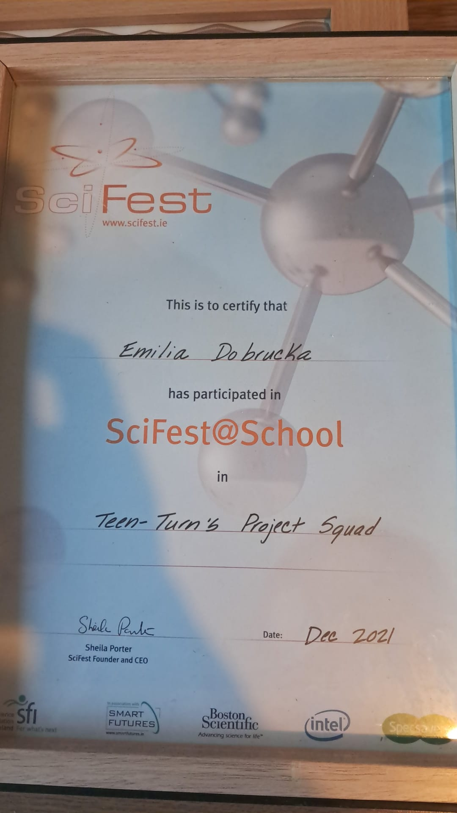

Projects:
Apps:
Independent
Happy to Help App
An app helps people manage and understand migraines
 My Contribution:
I worked inependently on the research, app layout
and created the project book.
My Contribution:
I worked inependently on the research, app layout
and created the project book.
Project Book:
View Happy to Help Project Book.
Team
Timetable App
An app that helps students view their timetable,
know when and where their classes are, and stay updated
when class time or details change.
My Contribution:
I worked as part of a team on the research and carried out a survey to gather feedback. I also contributed to the
project report book.
project report book:
View Timetable Project Book.
Team
The Feel Good Book
An app designed to help people with dementia
and their families manage everyday tasks.
 My Contribution:
I worked as part of a team but continued the project
after my teammate left. I contributed to the app layout,
research, business plan and project book
My Contribution:
I worked as part of a team but continued the project
after my teammate left. I contributed to the app layout,
research, business plan and project book
project book:
View the Feel Good Book Project Book.
Business Plan:
View the Feel Good Book Business plan.
Team
Maths Dictionary:
An educational maths app designed to help users
understand maths terms and concepts.
My Contribution:
I worked as part of a team on the research and survey.
I also contributed to the business plan
Business Plan:
View the Maths Dictionary Business plan.
Games and Web Projects:
Independent
Welcome to 'Live Or Die, Make Your Choice:
Warning:
This game have graphic scenarios, and moral choices that may be upsetting to some players.
Proceed only if you are prepared to face the consequences of your decisions.
A horror adventure text-based escape room game where players solve pussles,
make decisions and progress through different rooms to reach the ending.
Each decision can affect how the story develops. Inspired by the horror series Saw,
the player takes the role of a person kidnapped by Jigsaw and must make choices to Survive.
Module: Object Oriented Programming
Techologies Skills:
- GitHub
- .NETFramework
- C#
- Visual Studio
GitHub repository:
View the Welcome to 'Live Or Die, Make Your Choice repository.
Independent
GameLab_Hub:
GameLab_Hub is a web application designed to help students find their exam room,
date and time. It also shows available computer rooms and the software installed on
each computer, helping students who may not have access to their own computer.
The project address a real life problem faced by student.
Module: Object Oriented Development
Techologies Skills:
- GitHub
- Database
- C#
- Visual Studio
GitHub repository:
View the GameLab_Hub repository.
Independent
3D Video Game First:
3D Video Game is a 3D game developed independently in Unity. The Player can
attack enemies with sword attack, fireball attack, pick up items and explore
the game environments. The game includes two enemy types: a fire enemy that
attacks the player by shooting fireballs, and a sword enemy that follows
that follows and attacks the player when they are detected. It also features
checkpoint, platforms, loot blocks and other gameplay elements.
Module: 3D Game Programming
Techologies Skills:
- GitHub
- Unity
- C#
- Visual Studio
Features:
- Sword combat
- Jumping
- Enemy AI
- Fireball attacks
- Pickup
- Checkpoints
- Platforms
- Loot blocks
Ideas for the 3D Video Game:
View the 3D Video Game Word Doc.
GitHub repository:
View the 3D Video Game repository.
Achievements:
 Technovation Girl - April 29, 2023:
Technovation Girl - April 29, 2023:
The Feel Good Book received an award at Microsoft Ireland
as part of the Technovation Girl programme.
Technovation Girls Ireland- 7 May, 2022:
Completed the Technovation Girls 2022 season and developed skills
in teachnology and problem solvving.
 Teen Turn STEM InsideOut- November 4, 2022:
Teen Turn STEM InsideOut- November 4, 2022:
Participated in the STEM InsideOut: Cyber and Tech
programme with Riot Games, learning about technology
and the games industry

SciFest@School - Dec 2021:
Participated in the Teen Turn's Project Squad
as part of SciFest@School, gaining experience in
science, technology and project work.
 Special Award - Mount St. Michael TY E-Folio:
Special Award - Mount St. Michael TY E-Folio:
Received a Special Award for participating in
the TY E-Folio.
 Special Award - Mount St. Michael TY E-Folio:
Special Award - Mount St. Michael TY E-Folio:
Received the Sisters of Mercy Award for spiritual
leadership, service to people in need,
and care for the environment.
 Irish Heart Foundation - CPR 4 Schools:
Irish Heart Foundation - CPR 4 Schools:
Completed the Irish Heart Foundation CRP 4 Schools
workshop and received a certificate of attendance.